Oliver B. Lund
MSc Environmental Engineering — Technical University of Denmark · completed June 2025
Research Assistant at DTU Sustain working at the intersection of environmental engineering, geospatial analysis, and software development. This site is the detailed companion to my one-page CV and highlights selected software, project work, and visual outputs.
Use the CV for a one-page overview. Use the software and project panels for concrete examples of tools, analyses, maps, and reporting workflows.
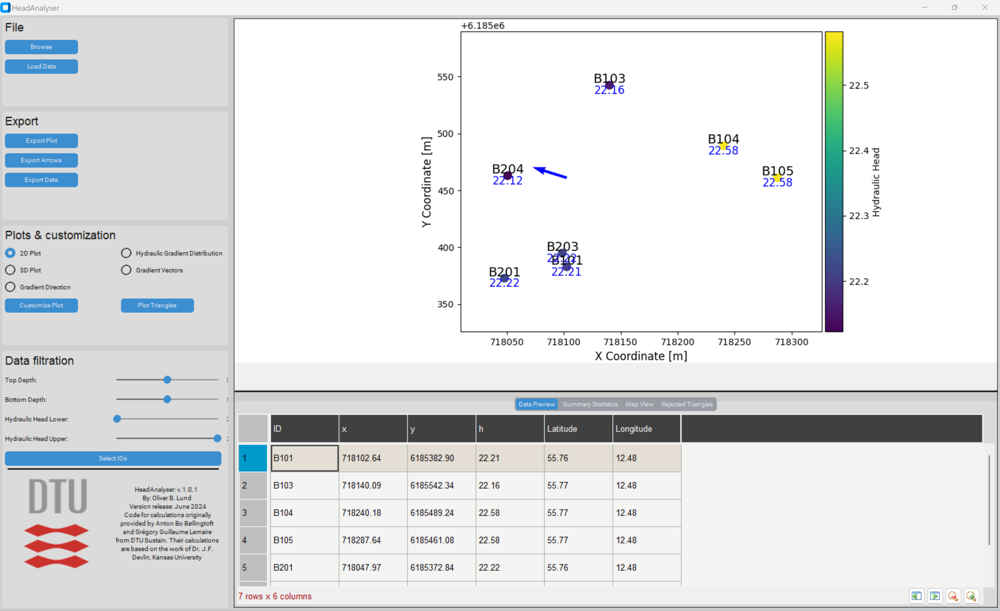

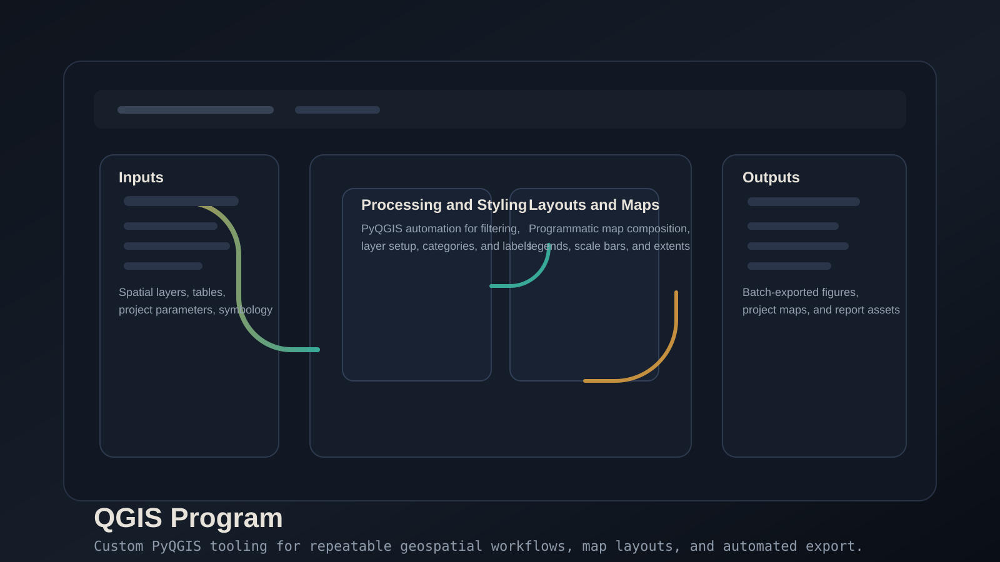
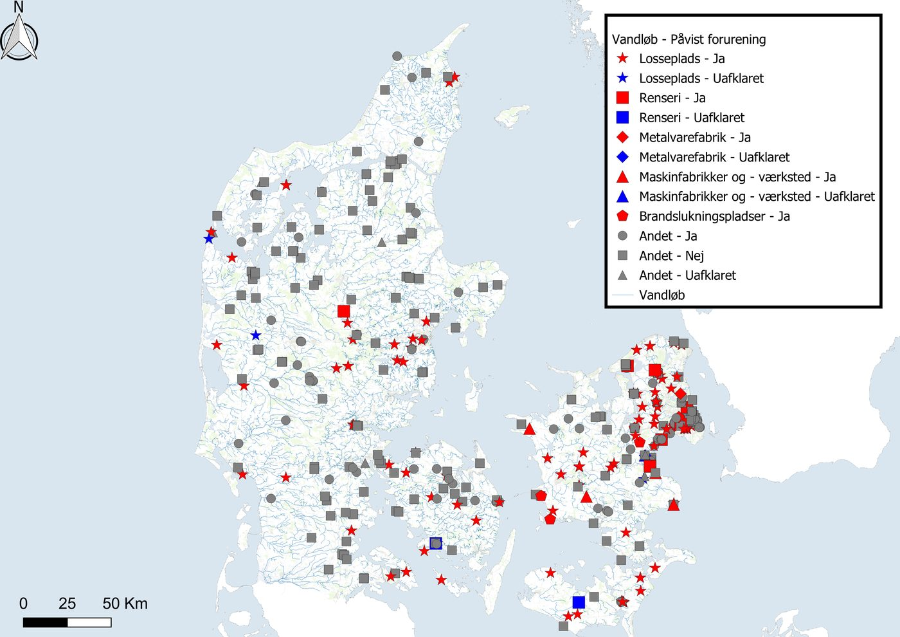
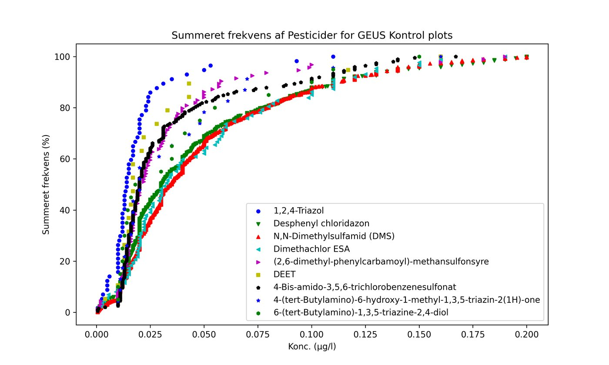
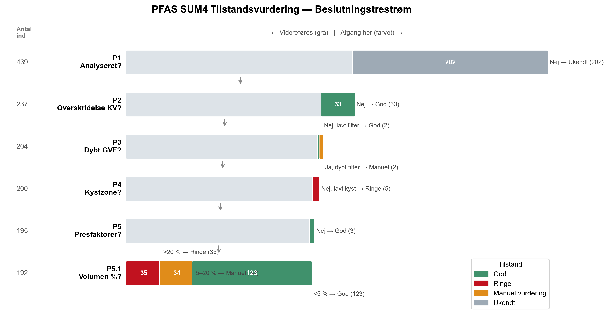
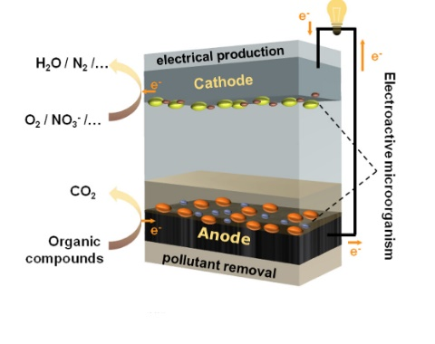
Building desktop applications and data tools in Python — from PyQt GUIs and automated pipeline scripts to SQL integrations and REST API clients.
End-to-end data workflows: cleaning, feature engineering, statistical modelling, and reproducible reporting from raw environmental sensor and field data.
Spatial data processing, map production, and GIS automation — from custom QGIS tooling and interactive web mapping to raster-based environmental workflows.
HeadAnalyser
v1.1.1 v2 in developmentDesktop application for groundwater hydraulic gradient analysis — estimating flow direction and magnitude from borehole head measurements using triangulation-based methods.
Release build overview from the published HeadAnalyser application.
HeadAnalyser calculates hydraulic gradients (magnitude and direction) from spatial measurements of water table elevations at multiple boreholes. The underlying method is based on least-squares fitting across all possible triangles formed by data points — an approach derived from the work of Devlin & Schillig (2017).
The program was developed at DTU Sustain (Technical University of Denmark) under the supervision of Prof. Poul L. Bjerg, with contributions from Grégory Lemaire and Anton Bo Bøllingtoft. It is published on DTU Data under a BSD 3-Clause licence and has been downloaded 421 times as of May 2025. It is actively used in DTU courses and by industry practitioners.
| GUI | V1: Tkinter + CustomTkinter → V2: PyQt5 + PyQtWebEngine |
| Scientific | NumPy · SciPy (griddata, pdist) · Pandas · Matplotlib |
| Geospatial | pyproj · Folium / Leaflet · TkinterMapView (V1) |
| Reporting | ReportLab · PyPDF2 · Selenium (map-to-PDF) |
| Other | Pillow · concurrent.futures · QtAwesome (V2) |
HeadAnalyser V2
in developmentFull architectural rewrite — modular PyQt5 application with integrated web mapping, sensitivity analysis, and geological data service integration.
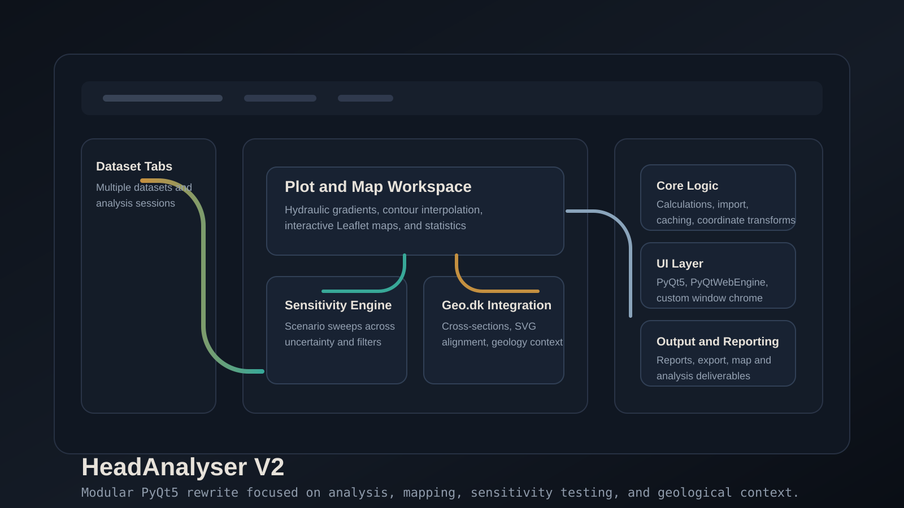
System overview diagram for the current modular rewrite.
HeadAnalyser V2 is a complete rewrite of the original HeadAnalyser, moving from a monolithic Tkinter script (~4,500 lines) to a modular PyQt5 application with clean separation of core logic, UI, and styling.
The core gradient estimation engine is unchanged — the same triangulation-based method from Devlin & Schillig (2017) — but the interface, architecture, and feature set are significantly expanded. V2 introduces multi-dataset tabs, embedded web maps rendered via PyQtWebEngine, a sensitivity analysis engine, and integration with the Danish national geological data service (Geo.dk).
| GUI | PyQt5 · PyQtWebEngine · QtAwesome (icons) · Custom frameless chrome |
| Scientific | NumPy · SciPy (griddata, pdist) · Pandas · Matplotlib (Qt5Agg) |
| Geospatial | pyproj (EPSG:25832 ↔ EPSG:4326) · Folium / Leaflet.js |
| Reporting | ReportLab · PyPDF2 |
| Other | Pillow · concurrent.futures · QWebChannel (JS bridge) |
GrainSizeAnalysis
v0.9.0-betaDesktop application for grain size distribution analysis and hydraulic conductivity estimation — a full Python reimplementation of the Excel-based HydrogeoSieveXL tool, with 16 validated K-calculation methods and integrated report generation.
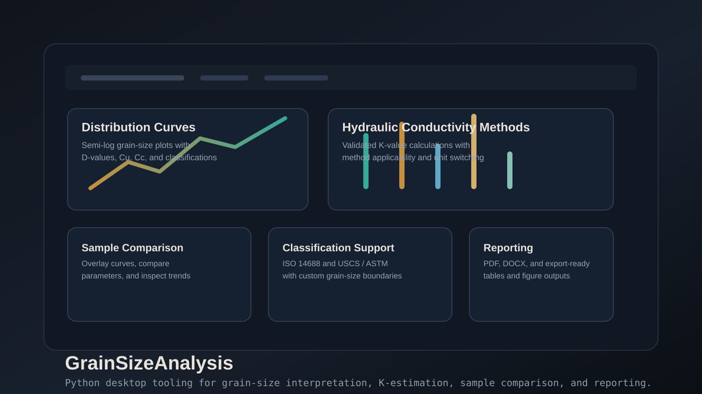
Workflow overview diagram for the current beta application.
GrainSizeAnalysis is a PyQt6 desktop application for processing sieve and hydrometer data from soil and sediment samples. Its primary purpose is to compute hydraulic conductivity (K) from grain-size distributions using 16 peer-reviewed empirical methods — covering the range from classical Hazen (1892) and Terzaghi to Kozeny-Carman and Alyamani-Sen — all validated against the Excel VBA reference implementation HydrogeoSieveXL (Devlin group).
The program supports both ISO 14688-1:2017 (Danish/European standard) and USCS/ASTM D2487-17 (American standard) classification schemes for grain fraction determination and soil type identification, with the option to define custom grain-size boundaries. It is developed in the context of DTU Sustain (Prof. Poul L. Bjerg's group) to modernise field data workflows for contaminated site investigations.
| GUI | PyQt6 · Custom frameless window chrome (qt_chrome module) · QtAwesome icons |
| Scientific | NumPy · Pandas · Matplotlib (Qt6Agg backend) |
| Reporting | PyQtWebEngine (HTML preview + PDF print) · python-docx (DOCX export) |
| Classification | ISO 14688-1:2017 · USCS/ASTM D2487-17 · Custom user-defined schemes |
| Distribution | PyInstaller (.exe) · BUILD_EXE.bat build pipeline |
DataMerger
A desktop application for data manipulation, merging, filtering, spatial analysis, and visualisation — built for real environmental data workflows.
[ DataMerger — screenshot ]
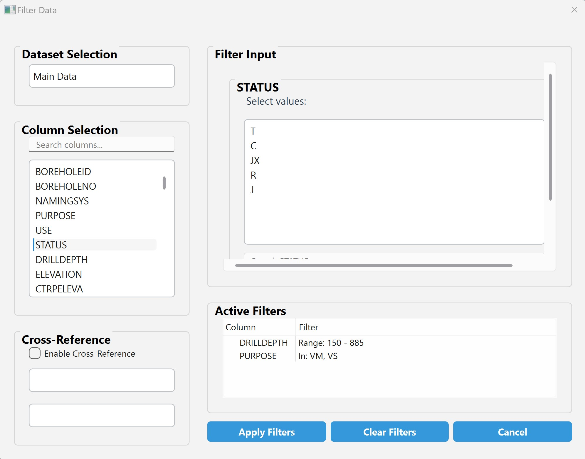
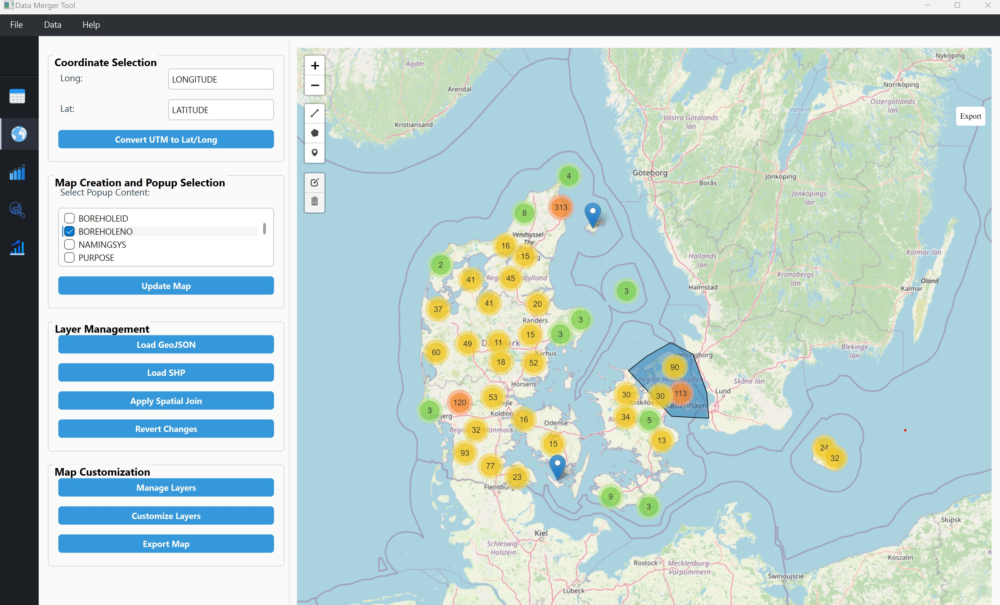
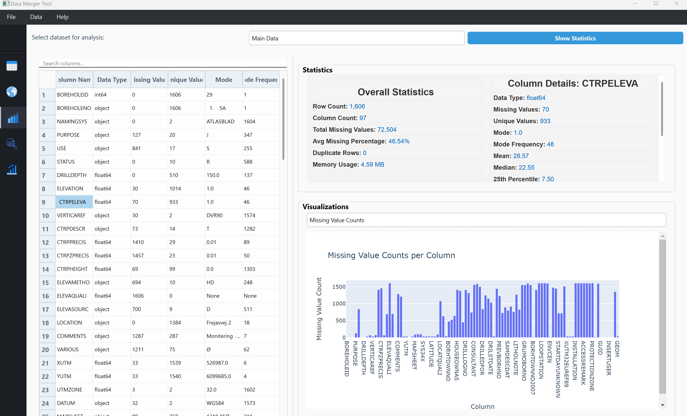
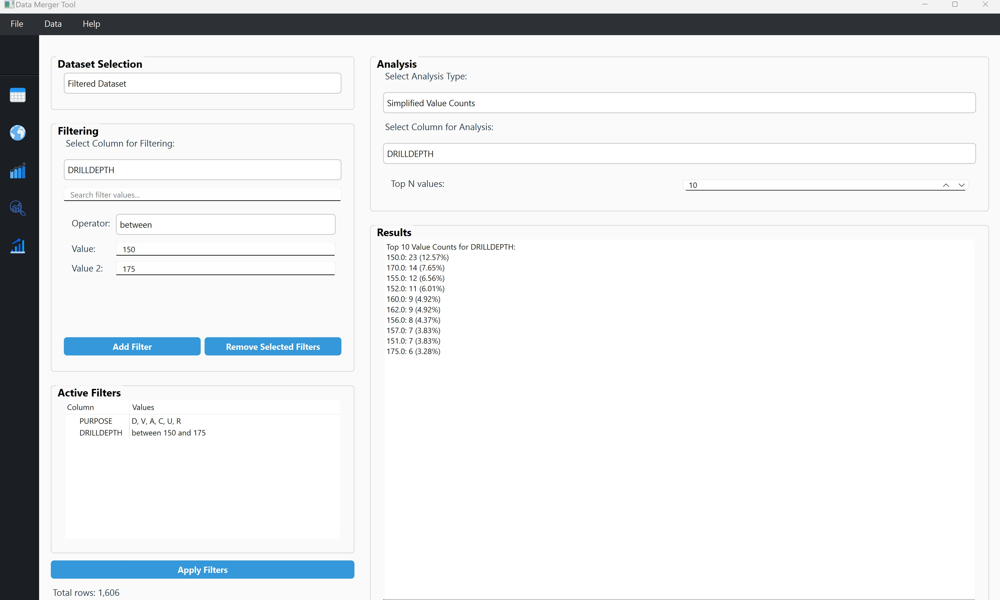
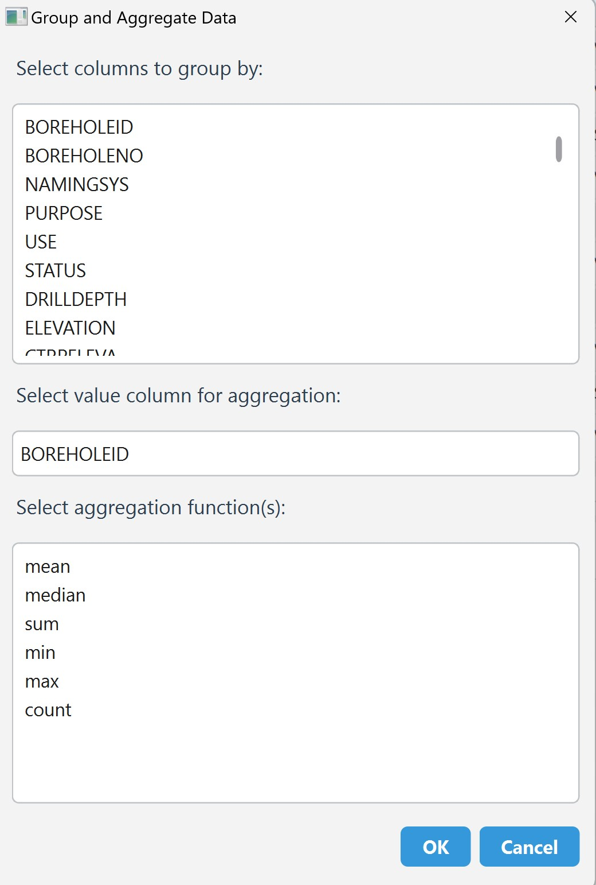
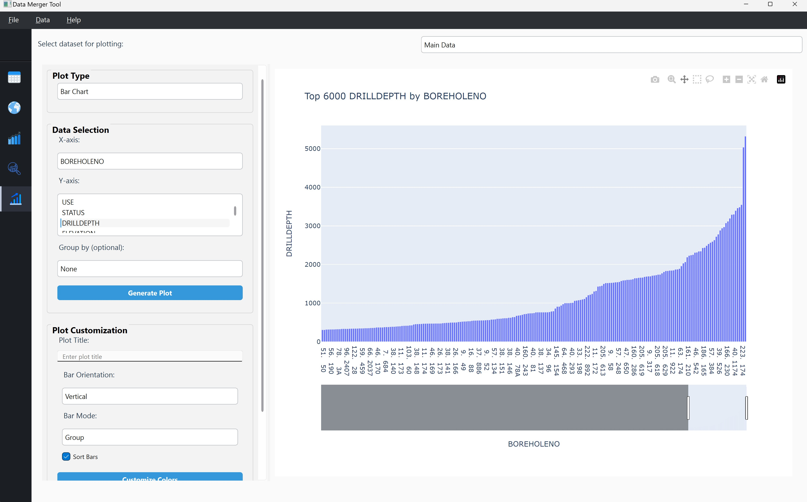
DataMerger is a desktop tool for working with messy environmental datasets without dropping into one-off scripts for every task. It brings table joins, filtering, grouping, aggregation, spatial selection, statistical inspection, and SQL-backed data access into a single interface built around recurring analysis workflows.
QGIS Program
Custom QGIS-based tooling for streamlining geospatial workflows and automated map production.
Workflow overview diagram showing the type of automation this tooling supports.
QGIS-based tooling developed for repeatable geospatial work at DTU Sustain, with emphasis on workflow automation, data handling, and automated map production. The focus is reducing manual setup in projects where the same styling, layout, filtering, and export steps need to be repeated across many maps or data subsets.
Regionernes overfladevand
Automated data pipeline and QGIS cartography for assessing groundwater contamination impacts on Danish regulated surface waters — commissioned by Miljøstyrelsen.
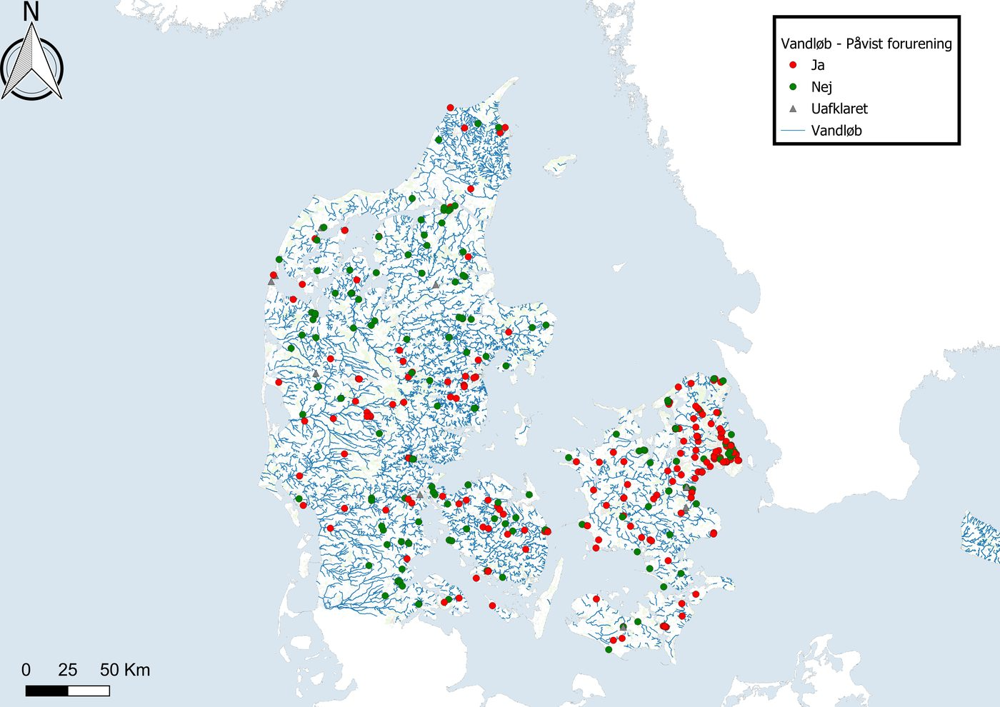
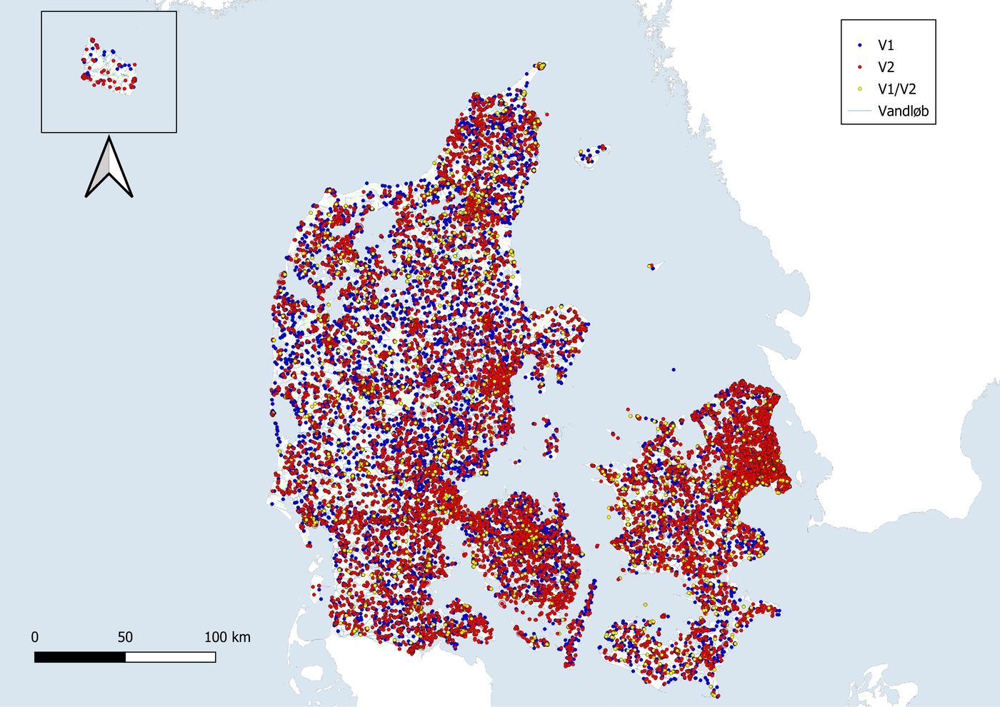
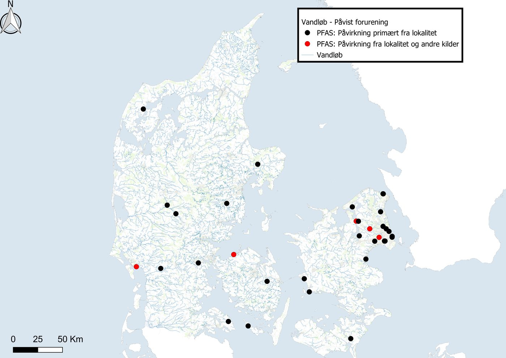
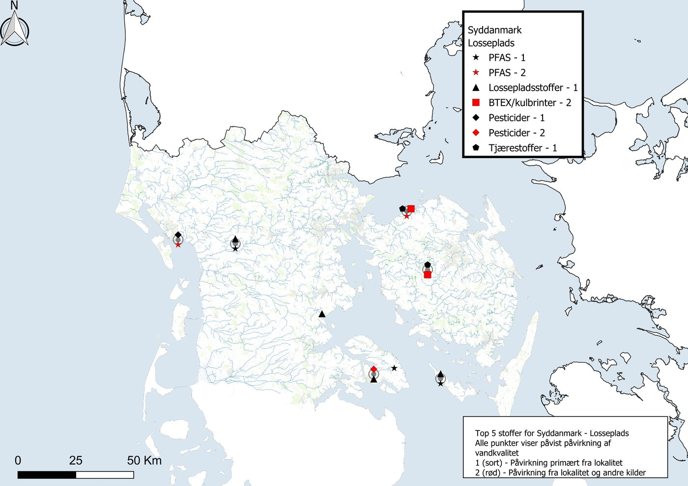
Following a 2014 amendment to Denmark's soil contamination law, the five regions conducted systematic risk screenings of roughly 36,000 mapped contaminated sites. In 2021–22, around 400 V1/V2 classified sites near regulated streams and coastal waters were sampled for environmentally hazardous substances (MFS). DTU Sustain was commissioned by Miljøstyrelsen to develop a method for evaluating the chemical impact of groundwater bodies on these regulated surface waters. The monitoring data from the regions formed the empirical foundation, covering compound groups including PFAS, pesticides, iron, and ammonium-N.
Binary classification of confirmed contamination (Ja / Nej / Uafklaret) at all stream monitoring stations across Denmark. Red points indicate confirmed surface water impact from a nearby contaminated site; green indicate no detected exceedance.
Monitoring stations symbolised by industry type (landfill, dry-cleaner, metalworks, machinery workshop, fire-training ground, etc.) and contamination status. Enables identification of which industries are most frequently associated with confirmed surface water impact.
All V1 (suspected, blue) and V2 (confirmed, red) mapped contaminated sites in Denmark, overlaid on the stream network. This national dataset from DKjord was integrated with the monitoring results to link contamination source polygons to individual sampling points.
Example of a detail map generated for a specific region and industry type. Each symbol represents a compound group detected at the site (PFAS, landfill compounds, BTEX/hydrocarbons, pesticides, tar compounds). Point displacement renders overlapping multi-compound detections at shared monitoring locations. Black = primarily from site; red = site plus other sources.
MapGenerator class in PyQGIS that iterates over all monitoring stations and compound groups to programmatically generate, style, and export individual maps. Each map includes categorised symbology, V1/V2 polygon overlays, the stream network layer, an inset overview map, a customised legend, and a scale bar — exported as 300 DPI PNG files organised by region, station, and compound group. Layers with only sub-detection-limit results are skipped automatically.QgsCategorizedSymbolRenderer to apply the four-tier exceedance colour scheme per compound, and QgsPointDisplacementRenderer to visually separate overlapping points at shared monitoring locations — critical for stations where multiple compounds were sampled.InSa-Drikkevand — PFAS & Pesticides in Groundwater
Co-authored Bilag A for the InSa-Drikkevand consortium — comparing national GEUS groundwater monitoring data against 7 Danish water utilities to characterise pesticide and PFAS contamination patterns.
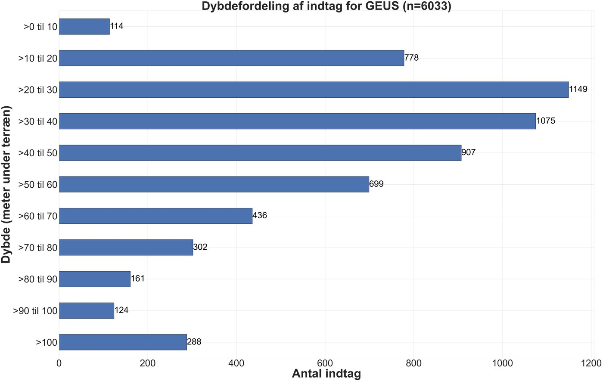
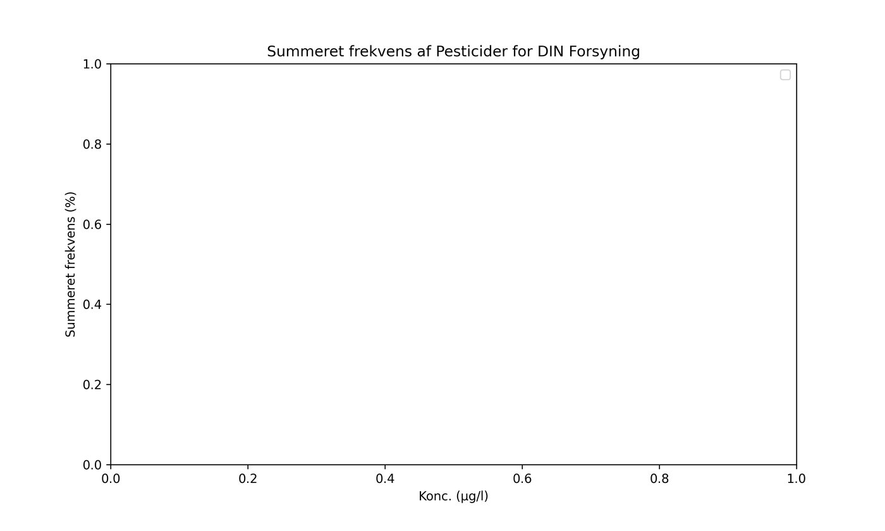
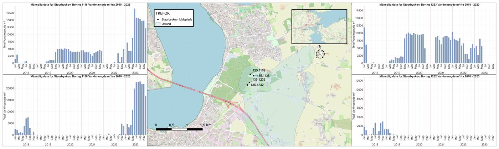
InSa-Drikkevand is a research consortium of major Danish water utilities — including HOFOR, NOVAFOS, Aarhus Vand, Aalborg Forsyning, DIN Forsyning, TREFOR, and VandCenterSyd — investigating the persistence and temporal development of PFAS and pesticide contamination in drinking water sources. GEUS had published national overviews of groundwater monitoring results across Denmark using data from the Jupiter database. The goal of this work was to compare each utility's own borehole monitoring results against the national picture, identifying where individual utilities diverge from the national average and for which compounds.
Depth distribution plots showing what percentage of screened intakes at each depth interval test positive for pesticides or PFAS (above DG or KV). Pesticide exceedances concentrate in the upper 20–40 m; PFAS detections are similarly shallow. Each utility plot is generated alongside the national GEUS baseline for direct comparison.
Bar charts showing the percentage-point difference between each utility's detection rate and the national average, per compound. DIN Forsyning shows notably elevated rates for desphenyl chloridazon (DPC: 33.3% vs. 14.2% nationally) and R471811 (15.6% vs. 1.8% nationally). Negative values indicate fewer detections than the national mean.
Replicated version of the GEUS national frequency plot, generated from the Jupiter extract using our own analysis code. Produced as a quality-control check to validate that our methodology matches GEUS's published results before applying the same approach to utility-level subsets. 9 key pesticides analysed for the period January 2018 – March 2023; 22+ PFAS compounds for September 2021 – March 2023.
Monthly water abstraction volumes per individual borehole at the Staurbyskov wellfield, operated by TREFOR (DIN Forsyning). Bar charts per borehole combined with a site overview map in a single figure layout using Pillow. Produced for three wellfields — Staurbyskov, Engkilde (Aalborg Forsyning), and Aike (DIN Forsyning) — to support temporal trend analysis at contaminated production sites.
Grundvandets kemiske påvirkning på målsatte overfladevandområder med miljøfarlige forurenende stoffer
Developed an automated Python workflow for screening whether contaminated sites may affect designated surface-water bodies via groundwater transport, combining risk assessment, spatial filtering, and quantitative state assessment.
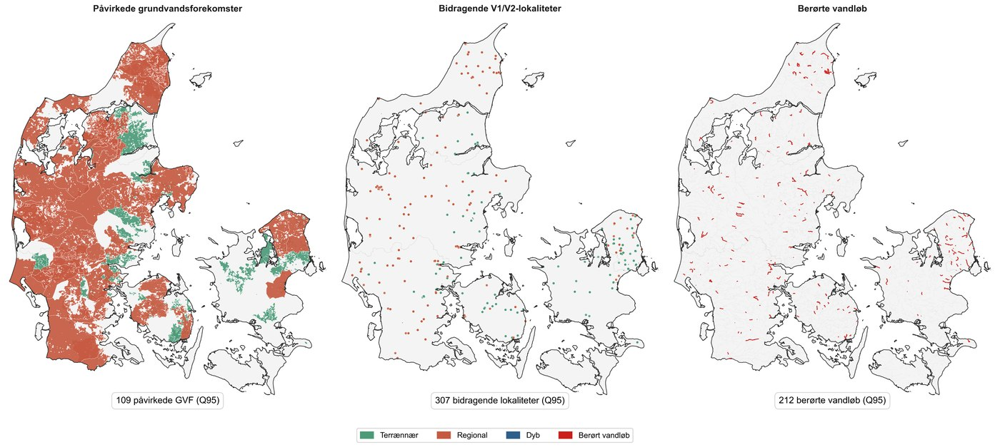
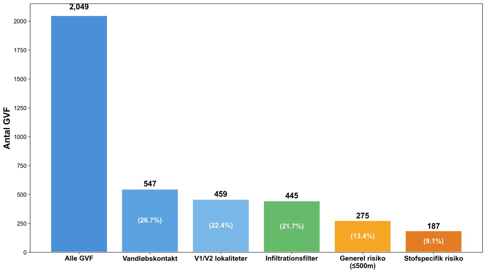
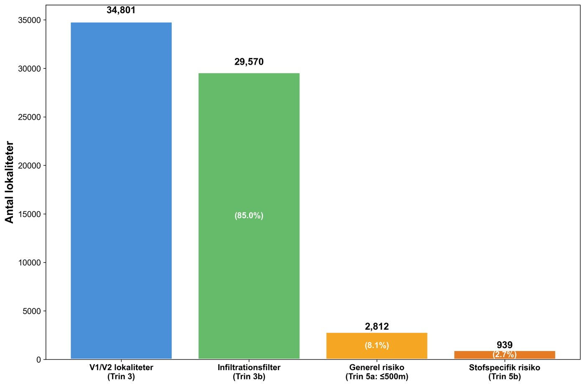
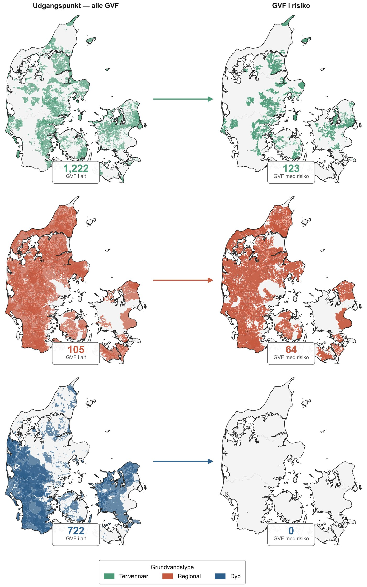
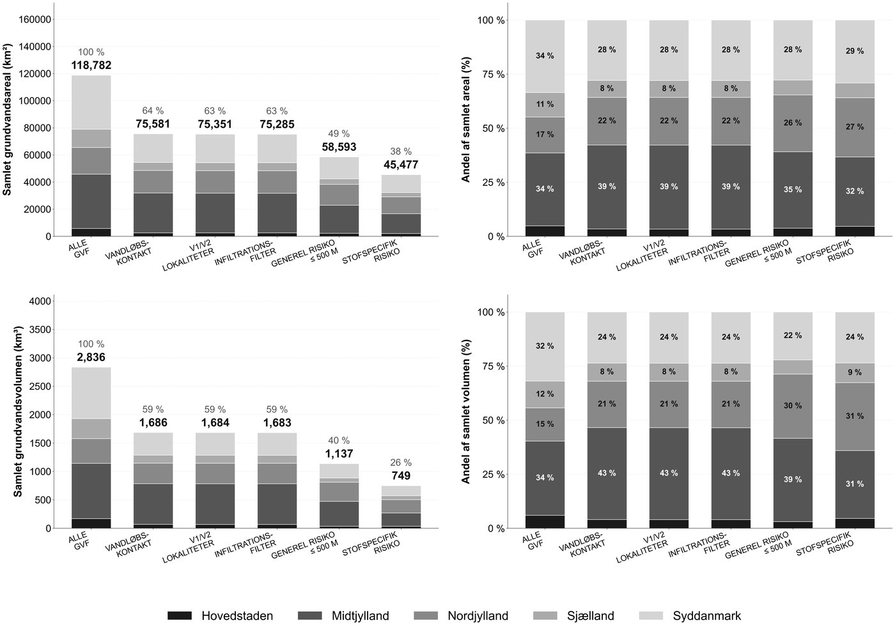
Working project visuals for now. A curated figure selection and final report reference can be added later.
The project addresses a national environmental screening problem: how to assess whether contaminated sites can influence designated surface waters through groundwater transport. My work focused on implementing the automated Python workflow behind that screening, using Danish groundwater, river, and site data to connect risk filtering with a later quantitative state assessment. The broader project was carried out at DTU Sustain for Miljøstyrelsen and contributes to a more systematic basis for environmental assessment and reporting.
Map-based outputs used to communicate the final state-assessment results and show how groundwater bodies, contaminated sites, and connected watercourse segments relate spatially at national scale.
A visual overview of how the workflow narrows the national set of groundwater bodies through sequential filters such as river contact, linked contaminated sites, infiltration conditions, and distance-based screening.
The same workflow is used to reduce a large national site dataset to the locations that remain relevant for further quantitative assessment, making the method practical and reproducible at scale.
A comparative view used to inspect how the screening behaves across shallow, regional, and deeper groundwater settings and to support interpretation of the broader risk patterns.
Area and volume plots used to follow how the workflow progresses across regions and to support reporting on the national screening from early filtering to later assessment stages.
Risiko- og tilstandsvurdering for PFAS og pesticider
Collaborative project with GEUS and Miljøstyrelsen, where I contribute Python workflows for parts of the risk assessment and implement tilstandsvurdering based on the final input of groundwater bodies assessed to be at risk.
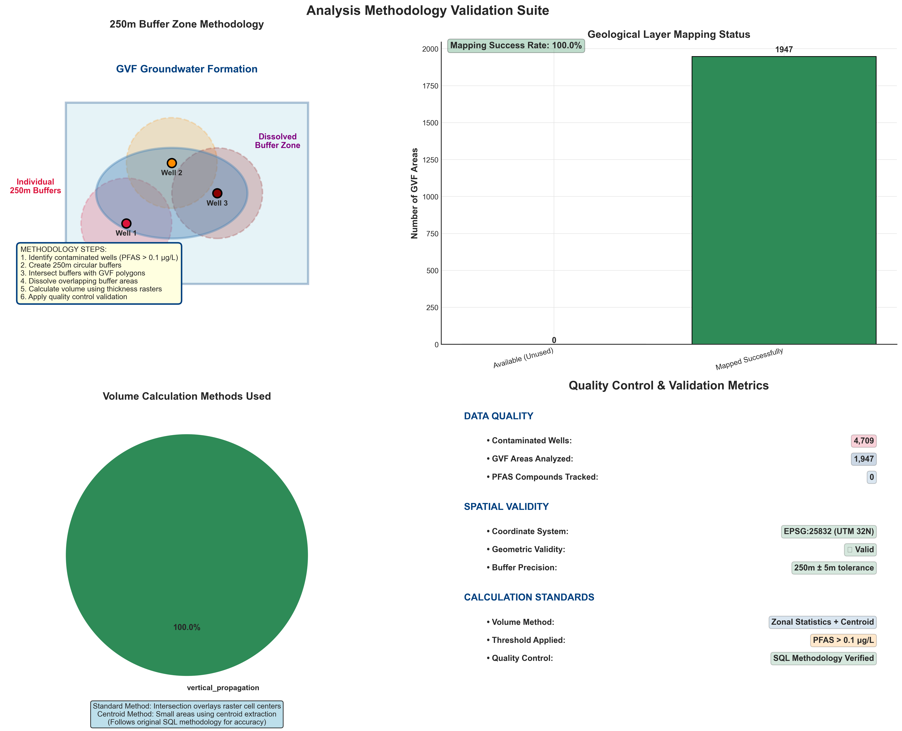
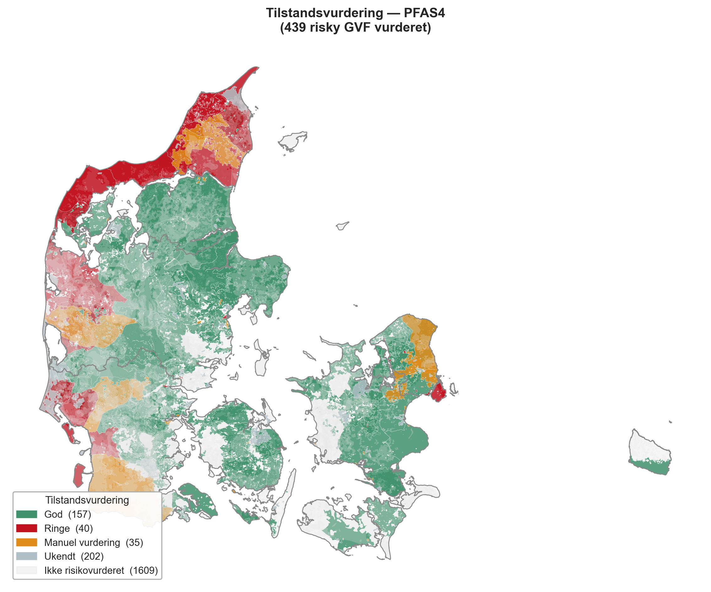
Illustrative working outputs only. Final curated figures and any report links can be added later.
This project is carried out in close collaboration between DTU Sustain, GEUS, and Miljøstyrelsen. My work extends an earlier SQL-based calculation track into modular Python workflows that support parts of the risk assessment, including affected-volume and source-pressure style calculations based on groundwater chemistry, DKJord V1/V2 source areas, airport-related land-use polygons, groundwater-body geometries, and DK-model depth and thickness rasters. These contributions feed into the broader collaborative risk assessment, after which the final input file of groundwater bodies in risk is used as input to the tilstandsvurdering workflow I have implemented. The project currently runs as three separate tracks: PFAS Sum-4, PFAS Sum-22, and pesticides.
The tilstandsvurdering workflow is implemented around explicit decision-tree logic. The figure shown here represents the kind of PFAS4 assessment flow used to move at-risk groundwater bodies through analysis coverage, exceedance checks, depth criteria, coastal criteria, and presfaktor-based evaluation.
A methodology figure used to explain how parts of the risk assessment are translated into workflow logic: source filtering, overlap calculations, depth-based exclusion, and affected-volume estimates at groundwater-body level.
Example map output from the PFAS tilstandsvurdering workflow, where groundwater bodies from the collaborative risk assessment input are routed into broad status classes for technical review and report work.
Sedimentary Microbial Fuel Cells
Bachelor thesis investigating how Sedimentary Microbial Fuel Cells (SMFCs) can be used to remediate coastal marine sediments suffering from hypoxia and toxic sulfide accumulation — awarded Årets bachelorprojekt 2022 by the DTU Sustain Colding Award.
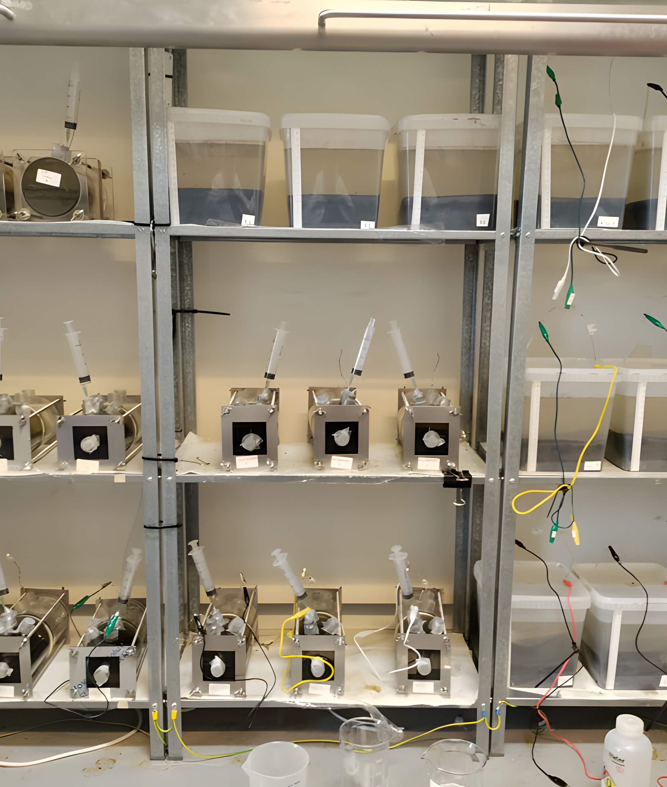
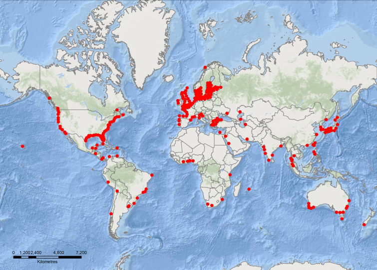
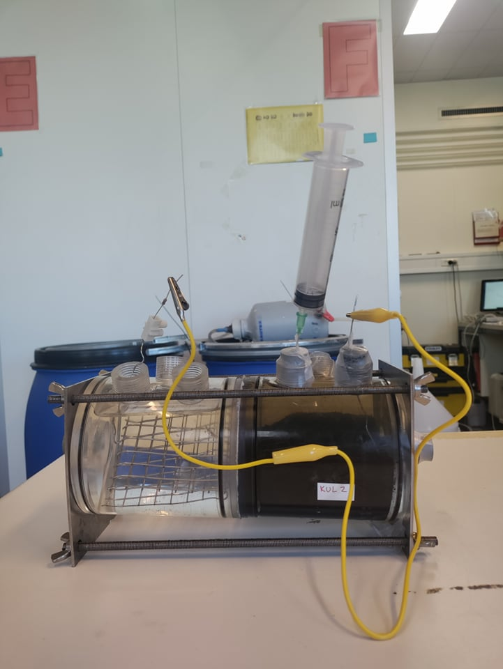
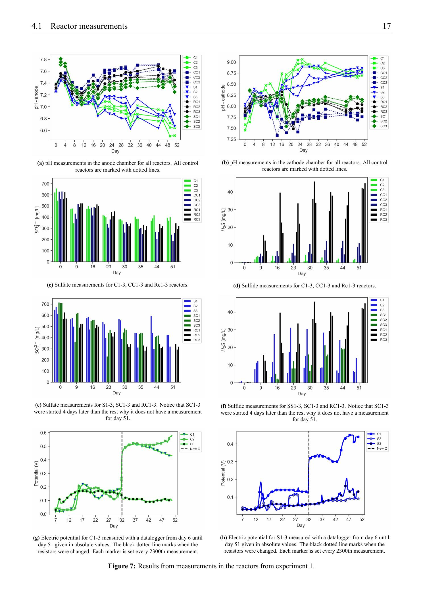
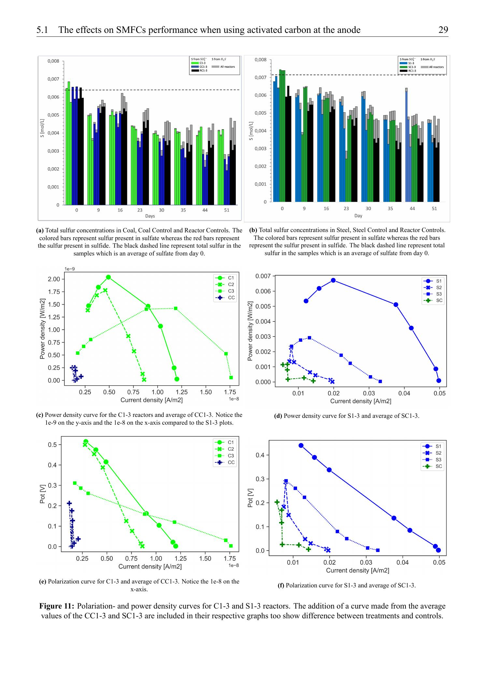
Eutrophication from agricultural runoff and wastewater discharge causes algal blooms that lead to hypoxic and anoxic "dead zones" in coastal marine environments. Under these conditions, sulfide — a toxic compound — accumulates in marine sediments and diffuses into the water column, with damaging consequences for marine ecosystems. This thesis investigated Sedimentary Microbial Fuel Cells (SMFCs) as a bioremediation technology. An SMFC exploits naturally occurring cable bacteria, which can connect sulfide oxidation in anoxic sediment to oxygen reduction at the water surface through long-distance electron transport — effectively generating an electrical current while oxidising the harmful sulfide.
Schematic of how a Sedimentary Microbial Fuel Cell functions. Electroactive microorganisms (cable bacteria) oxidise organic compounds and sulfide at the anode buried in anoxic sediment, transferring electrons through the circuit to the cathode in the oxygenated water column where oxygen is reduced — generating electricity while remediating the sediment.
Map from World Seas: An Environmental Evaluation showing confirmed hypoxic conditions in coastal areas worldwide. Red dots mark dead zones where oxygen levels fall below 2 mg/L — a condition strongly driven by eutrophication from agricultural and wastewater nutrient inputs, and the environmental problem this thesis addresses.
Close-up of one of the box-type SMFCs used in Experiment 2 (cathode-to-anode ratio study). The clear chamber holds marine sediment and water; the cylindrical black electrode is the activated carbon anode. The yellow wire connects to the external resistor circuit, and the syringe port allows sampling without disturbing the sediment layer.
Figure 7 from the thesis: pH measurements in both anode and cathode chambers, sulfate and sulfide concentrations, and electric potential over time for coal (C1-3, green) and steel (S1-3, blue) reactors. Carbon reactors stabilised at higher potentials (~0.5 V) and lower sulfide concentrations, while steel reactors showed more variable and generally lower performance.
Figure 11: stacked bar charts show total sulfur (sulfate + sulfide) decreasing over the experiment for both reactor types, and polarization and power density curves quantify electrochemical performance. Coal reactors (C1-3) reached current densities on the order of 10−8 A/m2, roughly 1000× higher than steel reactors (S1-3, ~10−5 A/m2), confirming the large advantage of activated carbon at the anode.
UV-A Radiation & Plant Growth
Special BSc course project investigating how varying intensities of UV-A radiation affect biomass production and secondary metabolite accumulation in hydroponically grown lettuce — written as a scientific manuscript and commended by the supervising professor as publication-ready.
.png)
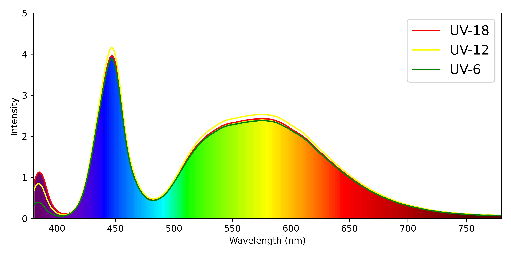
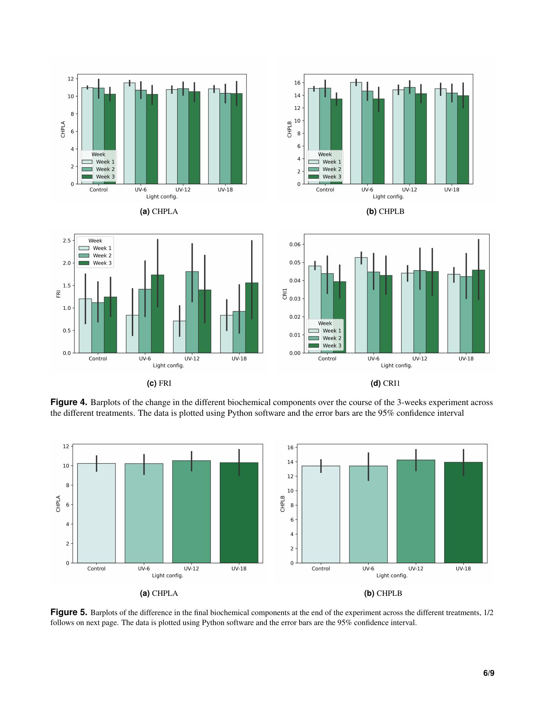
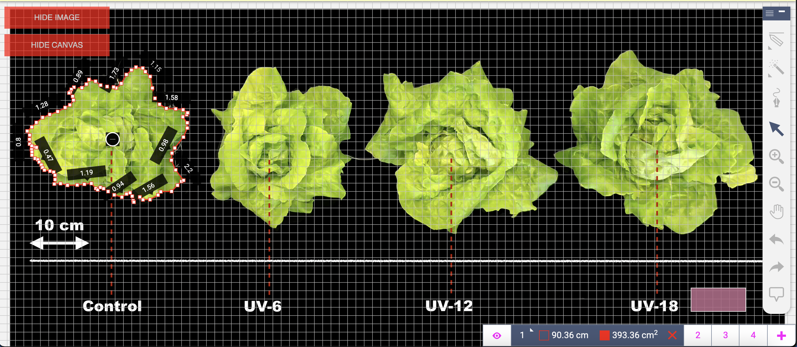
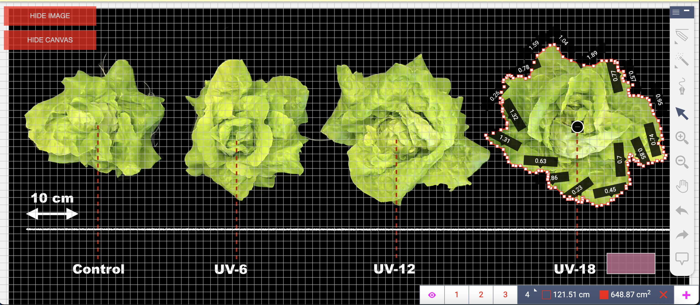
With the global population expected to reach 9.8 billion by 2050, indoor vertical farming is gaining importance as a controlled, resource-efficient alternative to outdoor agriculture. UV-A radiation (315–400 nm) has shown potential to increase both crop yield and the accumulation of health-beneficial secondary metabolites — such as flavonoids and carotenoids — but dose-response relationships for specific crops and intensities remained poorly characterised. This project investigated how supplementing standard PAR lighting with three different UV-A intensities (6, 12, and 18 µmol m−2 s−1 at 385 nm) affected lettuce (Lactuca sativa) grown in a hydroponic system at DTU Lyngby over three weeks.
Four Lactuca sativa heads photographed after three weeks under different UV-A intensities, shown against a black background with a 10 cm scale bar. The size progression is clear: UV-18 plants had 65% more leaf area and 16% higher shoot wet weight than the control. UV-12 showed 46% more leaf area and UV-6 14%, demonstrating a dose-dependent biomass response to UV-A supplementation.
Spectral intensity distributions of the three UV-A lighting configurations measured with a LI-180 spectrometer and plotted in Python, with the area filled using the actual visible colour spectrum. All three configurations share the same spectral shape — peaking around 450 nm (blue) and with a broad shoulder in the green-yellow range — differing only in intensity at 6, 12, and 18 µmol m−2 s−1. The control received no UV-A.
Weekly measurements of four biochemical indices tracked using the CI-710s SpectraVue Leaf Spectrometer across all four treatments. Chlorophyll A and B remained broadly stable, indicating UV-A did not impair photosynthesis at these intensities. Flavonoids (FRI) increased in all UV-A groups relative to the stable control — with UV-6 showing the largest week-3 increase of 39.4%. Carotenoids (CRI1) rose dose-dependently, reaching +16.2% in UV-18. Large confidence intervals reflect the limited replicate count (n=4), an acknowledged constraint of the experiment. All plots generated in Python.
Processed overhead image of a UV-18 plant from Appendix B, used to quantify leaf area via image segmentation in Photoshop and InDesign. This non-destructive measurement method complemented the gravimetric yield data, with UV-18 plants showing 65% greater leaf area than control — a strong visual indicator of UV-A's effect on plant morphology.
Automatic Quality Control of Stream Water Level Time Series Using Deep Learning
MSc thesis investigating LSTM neural networks for automated anomaly detection and imputation in Danish stream water level data — developed in collaboration with SGAV and built around a custom synthetic anomaly framework for training data generation.
Manual quality control (QC) of hydrological sensor data is resource-intensive and increasingly difficult to sustain at national scale. SGAV — the authority responsible for Danish stream monitoring — handles large volumes of water level time series that require review, correction, and imputation of anomalies such as spikes, offsets, drift, and baseline shifts. These anomalies arise from sensor malfunctions, frost events, aquatic weed growth, and field disturbances. This thesis investigated whether recurrent neural networks — specifically LSTM architectures — could automate parts of this workflow, reducing manual burden while maintaining the reliability needed for operational use.
Maps & Visualisations
A curated selection of maps, plots, and analysis outputs from projects and research work.
Oliver B. Lund
Environmental engineer working at the intersection of hydrology, geospatial analysis, and software development.
Environmental engineer with a background spanning hydrology, GIS, and applied data science. I work at the intersection of environmental domain knowledge and software — building tools and analyses that turn raw field data into usable, reproducible outputs.
I am currently a Research Assistant at DTU Sustain from August 1, 2025 through July 31, 2026. Before that role, I worked as a student assistant in the same research group and served twice as a teaching assistant in a Life Cycle Assessment course.
Completed the MSc in Environmental Engineering with work spanning hydrology, GIS, environmental data analysis, and software-oriented workflows.
Worked in the same research group before moving into the research assistant role.
Served twice as a teaching assistant in a course on Life Cycle Assessment (LCA).
Current role in the same DTU Sustain group, following the earlier student assistant position.
Primary public profile for portfolio code, tooling work, and future project repositories.
Source for this interactive CV and case-study website.
English draft pending a dedicated translation and wording pass.
Danish CV prepared for browser printing or PDF export.